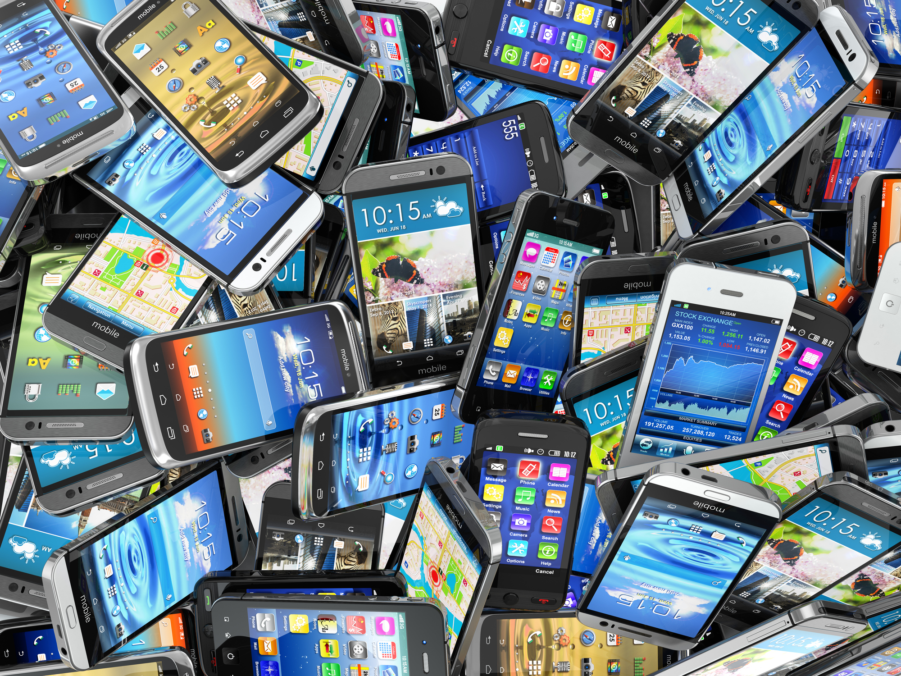
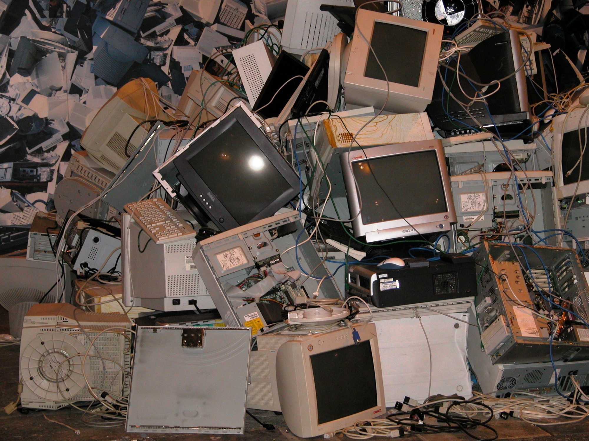
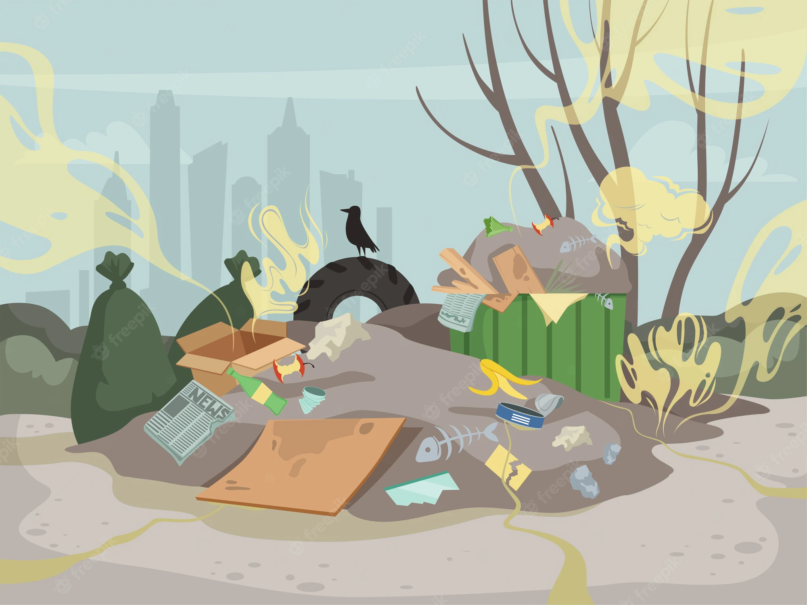
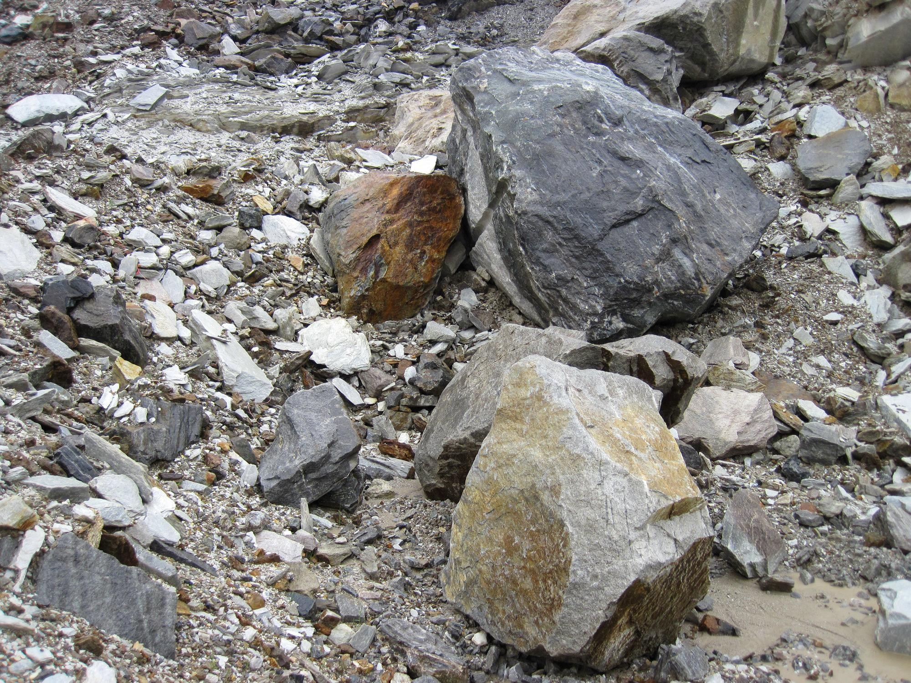
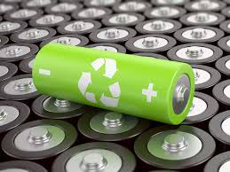
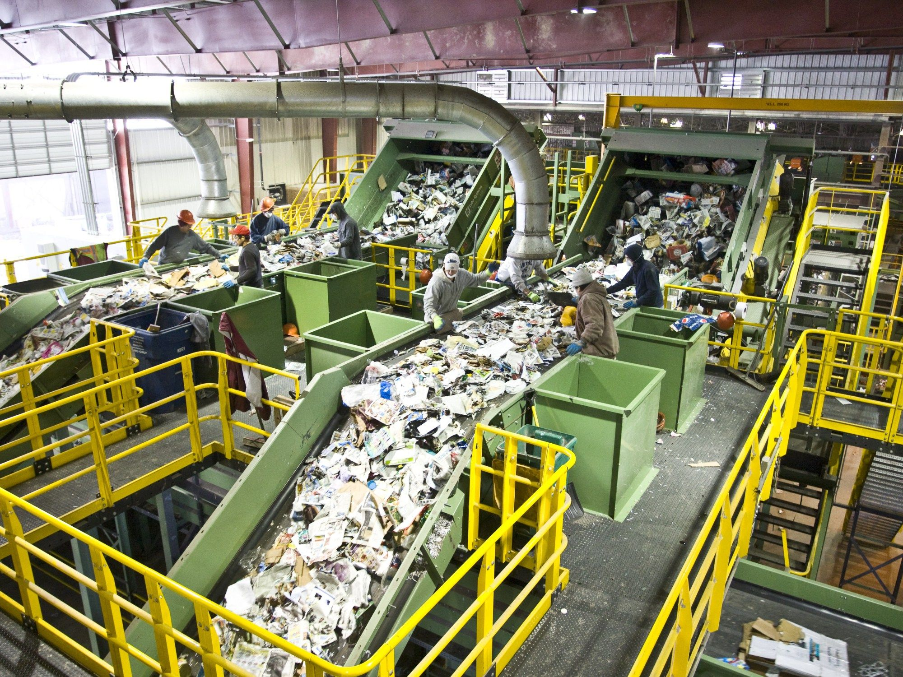

Você pode fazer a diferença!
Poucos sabem sobre os problemas do lixo eletrônico. Saiba mais aqui e nos ajude contra esse grande desafio dos nossos dias atuais.

|  |
Com o avanço da tecnologia e seus meios de produção, vieram melhores preços e oportunidades de compra de equipamentos eletrônicos, o que resultou em maiores quantidades de aquisições de equipamentos como celulares, computadores, tablets, notebooks, etc. |
|
Entretanto, a compra massiva de produtos eletrônicos trouxe consigo um enorme desuso desses equipamentos ao longo do tempo e, consequentemente, houve um grande descarte, que, na maior parte das vezes, é feito de maneira incorreta. |
 |
|  |
Não é necessário falar que o despejo incorreto de qualquer tipo de material (eletrônico ou não) é extremamente prejudicial para o meio ambiente. Com isso, nossa ONG foca em um tipo específico de descarte inapropriado que afeta muito o nosso mundo nos dias atuais: o descarte eletrônico. |
|
Muitos não sabem, mas o despejo incorreto de celulares, computadores, placas eletrônicas e outros produtos semelhantes podem causar um prejuízo colossal para o meio ambiente. Isso ocorre devido ao fato de que esses equipamentos possuem em sua composição materiais como: fios metálicos, metais pesados, baterias, plástico, cristais e resinas. |
 |
|
Tais materiais tem um impacto muito grande. Por mais que sejam sutis aos olhos os danos desses elementos, os desfechos de seu descarte incorreto são aterrorizantes. Por exemplo, existem vários metais pesados em equipamentos eletrônicos, como cádmio, mercúrio, chumbo e berílio, que ao terem contato com o solo liberam resíduos tóxicos os quais danificam o lençol freático. |
|
Com esse conhecimento, é possível compreender que não se pode descartar equipamentos eletrônicos de qualquer maneira. Caso os resíduos desses produtos vão para aterros, o lençol freático é contaminado; se for para incineradores, os despejos liberam toxinas no ar que poluem a atmosfera. |
|  |
A forma ideal de descartar produtos eletrônicos é a partir de centros de reciclagem especializados nesse tipo de lixo. Com a reciclagem é possível reaproveitar vários dos componentes existentes em equipamentos do nosso dia a dia. Não só os materiais são desmontados de maneira correta e recebem o tratamento ideal, mas também garante menor custo em produção de novos produtos como celulares e computadores, o que, consequentemente, diminui o preço final para os consumidores. |
|
Caso você não consiga alcançar com muita facilidade esses centros de coleta, apenas separe idealmente todo tipo de lixo eletrônico que esteja em sua casa e quando atingir um nível grande de despejo tire uma hora de seu mês para levar esses produtos em um local especializado. Lembre-se, por mais que pareça trabalhoso, você fará uma grande diferença para o futuro do planeta. |
 |
|
Que saber como você pode ajudar ainda mais? Nossa ONG além de ajudar a conscientizar quanto ao descarte incorreto de eletrônicos, também ajuda diretamente no meio ambiente com nosso programa especial. Existem diversos voluntários e muito investimento para consertar o dano já causado. Fazemos tratamento de resíduos despejados, limpeza de solo, filtragem de ar, coleta em casas, coleta dos materiais nas ruas, rios e lixões, etc. Para nos ajudar a continuar a limpar o planeta você pode fazer uma pequena doação, se tiver interessado(a), basta clicar aqui para ser direcionado(a) à página de doações. |